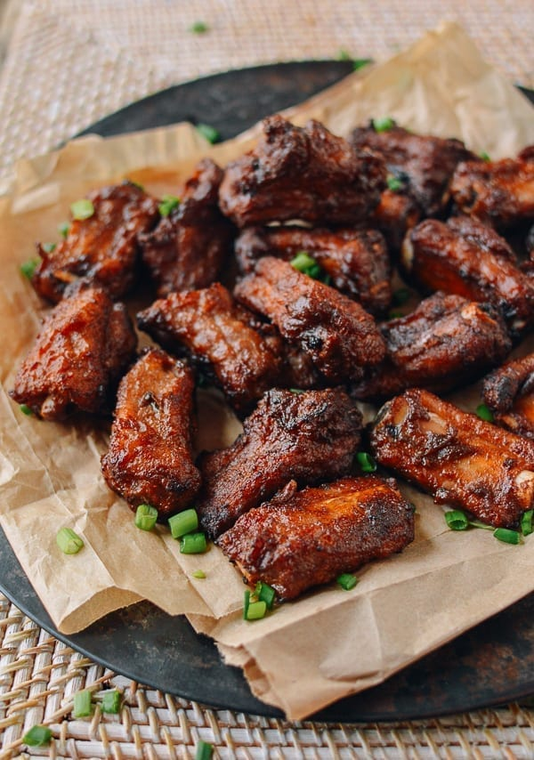

Pork Ribs Recipe

Chinese Fried Ribs With Fermented Red Bean Curd
Fermented Tofu (酱豆腐, 腐乳, jiang dou fu, fu ru) is also known as fermented
bean curd or preserved tofu. It is a salty condiment in Chinese cuisine.
There are many types of fermented tofu. The most common ones are white fermented
tofu (白腐乳) and red fermented tofu (红腐乳) for cooking.
This Dish is made by Bill and he talks about how Chinese fried ribs marinated in red
bean curd are a favorite in his family and a proven crowd pleaser at any party.
"The combination of fermented red bean curd and five spice powder makes for some of
the all-time tastiest ribs in our repertoire." - Bill.
Ingredients
- 2 pounds pork ribs
- 1 large piece red fermented bean curd
- 1/2 teaspoon ground white pepper
- 1 teaspoon sesame oil
- 1 teaspoon five spice powder
- 2 tablespoons Shaoxing wine
- 1 tablespoon soy sauce
- 1 tablespoon maple syrup
- 1/2 teaspoon garlic powder
- 1/2 teaspoon onion powder
- 1/2 teaspoon baking soda
- 1/4 cup cornstarch
- 3 cups canola oil
Steps
- Place your pork rib pieces into a large bowl. Add the red fermented bean curd,
white pepper, sesame oil, five spice powder, Shaoxing wine, soy sauce, maple syrup,
garlic powder, onion powder, and baking soda—everything except the cornstarch and
frying oil.
- Using your hands, work the mixture into the pork ribs until they are well coated. Marinate
anywhere from 2 hours to overnight.
- If you refrigerate the pork ribs overnight, let them come up to room temperature before cooking.
When you're ready to fry, pour 3 or more cups of peanut or vegetable oil into a small to medium
pot—enough so you have 2-3 inches of oil. Heat your frying oil to 300 degrees F/150 degrees C.
It's best to use a kitchen thermometer to monitor the oil temperature before and during the frying
process.
- When the marinated ribs are at room temperature and while your oil is heating, toss the ribs once more
to redistribute the marinade, as there may be liquid that has pooled. Make sure everything is
well-combined. Next, add the cornstarch to the ribs and mix until a paste forms that evenly coats the
ribs.
- When the oil reaches frying temperature—either via your thermometer, or when a rib dipped in the oil
sizzles strongly—deep fry the pork ribs in small batches, about 4-6 pieces at a time. Use a slotted
spoon to separate them as soon as you place them in the oil to avoid sticking and ensure even cooking.
- Turn up the heat once you drop in the ribs, as the oil will cool. As you fry, continue to adjust the heat
lower or higher as needed to maintain temperature. The pork ribs should fry fairly quickly, about 5-7
minutes.
- When they're cooked, they'll be a light maroon color and should be crisp all around. Transfer to a paper
towel using a slotted spoon. When all the ribs are fried, serve!